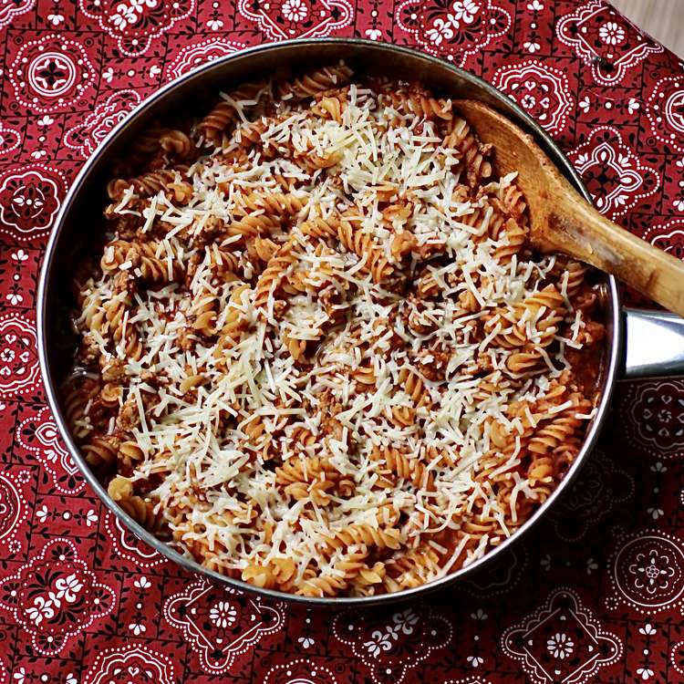

Easy One-Pot Ground Turkey Pasta

Description
This ground turkey pasta dish is a quick and easy one-pot main meal. Substitute your favorite ground meat, broth, spices, and pasta shape. For those who want an easy meal or those beginning to cook, this is for you.
Ingredients
- 1 pound ground turkey
- 1 medium onion, chopped
- 3 cloves garlic, minced
- 2 tablespoons chopped fresh oregano
- 1 teaspoon garlic powder
- 1 teaspoon dried basil
- 3 cups rotini pasta
- 1 (28 ounce) jar spaghetti sauce
- 1 (14 ounce) can chicken broth
- ¼ cup freshly grated Parmesan cheese, or to taste
Steps
- Heat a high-sided 12-inch skillet with a lid over medium heat. Add ground turkey, onion, and garlic; cook and stir until turkey browned, about 8 minutes. Season with oregano, garlic powder, and basil. Stir in rotini until well combined.
- Add pasta sauce and broth, making sure rotini is completely covered. Bring to a boil, then reduce heat, cover, and cook until rotini tender yet firm to the bite, 7 to 10 minutes.
- Top with Parmesan cheese and serve.
Return Home